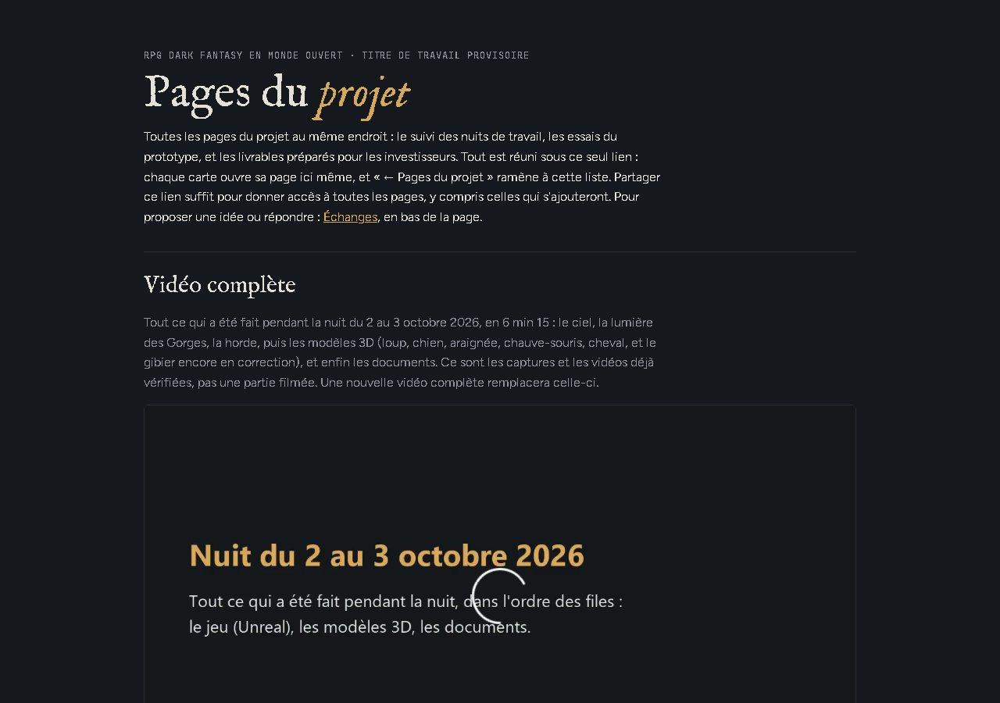

Le site du projet
ValidéT-0163 · D-256

Même apparence et même contenu qu'avant : modèles 3D, bible, fiches, maquettes, sons, présentation, et une page par jour rangée dans sa semaine.
Sur le PC : E:/aaa-proto/pages-github/site/
Quatrième journée de la semaine. Les pages du projet déménagent sur un site GitHub Pages à adresse fixe, pour que tout le monde puisse les ouvrir.
Mise à jour : 09/10/2026 à 11:34
Chaque ticket a un exécutant et un vérificateur ; une correction est confiée à un agent neuf (D-231).
Le prototype jouable ; un seul agent à la fois dans le projet.
Se raccrocher en l'air coûte 10 d'Endurance ; à zéro hors combat, le héros arrête seulement de courir ; un écran pour changer les touches au clavier et à la manette ; la démarche lourde du meneur vérifiée.
En coursLancé à 10:58.
Après T-0164 : la saison et la météo (T-0168), puis le cimier et le pied tourné (T-0169). L'araignée entrera dans le jeu avec la mine.
Le site de suivi du projet, pour le directeur et son ami.
Les 18 pages de « Pages du projet » et la semaine du 6 au 12 octobre publiées sur un site public non référencé, avec le fil Échanges sur les Discussions GitHub et un outil de publication à chaque étape.
ValidéLancé à 08:55, site en ligne à 09:08. Renvoyé une fois en correction : un outil pouvait vider le site s'il était relancé, et l'origine des images de concept était mal notée. Corrigé par un agent neuf, puis validé à 09:50 : rien de personnel dans le dépôt, aucun lien cassé, contrôle vert sur 23 pages.
Le directeur installe giscus d'un clic pour ouvrir les Échanges ; ensuite, chaque étape du travail est publiée ici.
Les documents de design et les bêtes, hors du projet Unreal.
Raccrochage payant, Endurance hors combat, touches réglables, démarche du meneur, franges du sanglier ; petites corrections (taille de la horde, origine des images de concept).
ValidéLancé à 10:58. Livré à 11:02 : décisions reportées dans les maquettes, Exploration, la zone de départ, les groupes ennemis et la bible ; origine des images de concept corrigée. Vérification lancée. Renvoyé en correction à 11:07 : le plan de production disait encore « sans réassignation des touches », et une phrase sur l'Endurance était ambiguë. Correction confiée à un agent neuf. Corrigé, puis validé à 11:09.
Dernier défaut connu de l'araignée : ses pattes se croisent dans la marche, la course et la mort.
En vérificationLancé à 10:58. Livré à 11:34 : plus aucun contact entre les pattes sur les 7 animations (avant : jusqu'à 597 cm² dans la mort), pieds au sol aux mêmes moments. Vérification lancée.
Ensuite : la page « Modèles 3D » à jour (perdrix, lapin, araignée corrigée).
Ce qui a été livré ou validé aujourd'hui.
T-0163 · D-256

Même apparence et même contenu qu'avant : modèles 3D, bible, fiches, maquettes, sons, présentation, et une page par jour rangée dans sa semaine.
Sur le PC : E:/aaa-proto/pages-github/site/
Point du matin : aucun ticket en cours, décisions jusqu'à D-255.
Décision D-256 : les pages passent sur GitHub Pages (site public non référencé, Échanges sur GitHub, publication à chaque étape).
Lancement de T-0163 ; le contenu des deux pages claude.ai est téléchargé (368 fichiers).
Le site est en ligne.
T-0163 validé après une correction.
Décision D-257 (voix générées, anciennes pages, suite sans carte graphique). En attente du choix du directeur pour la suite.
Carte graphique libre : décision D-258 (écran « Commandes », saison et météo, petits restes).
Lancement de T-0164 (Unreal), T-0165 (documents) et T-0166 (pattes de l'araignée), en même temps.
T-0165 livré, vérification lancée. L'écran « Commandes » revient sur le « sans réassignation des touches » du socle de démo (lecture du Chef ajoutée à D-258).
T-0165 renvoyé en correction (plan de production, phrase sur l'Endurance) ; agent neuf lancé.
T-0165 validé : D-254, D-255 et D-258 (1) sont dans les documents (Documents/ aligné jusqu'à D-255).
T-0166 livré (pattes de l'araignée), vérification lancée.
Questions en attente du directeur.
1 question attend sa réponse. Personne ne les tranche à la place du directeur.
Surnoms de l'entité : quelle liste ? (à choisir à deux, dans le fil « Échanges »)
E:/aaa-proto/pages-github/site : le clone du site · E:/aaa-proto/livrables/suivi : les pages de jour et l'outil de publication · D:/aaa-game/.equipe/taches (les tickets)